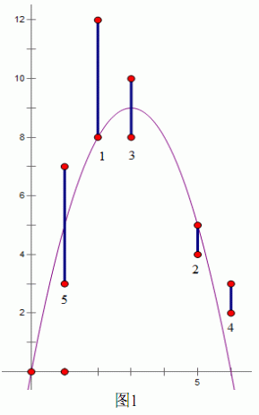

沫沫最近在玩一个二维的射箭游戏，如下图 1 所示，这个游戏中的 $x$ 轴在地面，第一象限中有一些竖直线段作为靶子，任意两个靶子都没有公共部分，也不会接触坐标轴。沫沫控制一个位于 $(0,0)$ 的弓箭手，可以朝 $0$ 至 $90$ 中的任意角度（不包括 $0$ 度和 $90$ 度），以任意大小的力量射出带有穿透能力的光之箭。由于游戏中没有空气阻力，并且光之箭没有箭身，箭的轨迹会是一条标准的抛物线，被轨迹穿过的所有靶子都认为被沫沫射中了，包括那些 只有端点被射中的靶子。这个游戏有多种模式，其中沫沫最喜欢的是闯关模式。在闯关模式中，第一关只有一个靶 子，射中这个靶子即可进入第二关，这时在第一关的基础上会出现另外一个靶子，若能够一箭 双雕射中这两个靶子便可进入第三关，这时会出现第三个靶子。依此类推，每过一关都会新出 现一个靶子，在第 $K$ 关必须一箭射中前 $K$ 关出现的所有 $K$ 个靶子才能进入第 $K+1$ 关，否则游戏结束。沫沫花了很多时间在这个游戏上，却最多只能玩到第七关“七星连珠”，这让她非常困惑。 于是她设法获得了每一关出现的靶子的位置，想让你告诉她，最多能通过多少关。
第一行是一个正整数 $N$，表示一共有 $N$ 关。接下来有 $N$ 行，第 $i+1$ 行是用空格隔开的三个正整数 $x_i，y_{i_1}，y_{i_2}(y_{i_1}<y_{i_2})$，表示第 $i$关出现的靶子的横坐标是 $x_i$，纵坐标的范围是从 $y_{i_1}$ 到 $y_{i_2}$。
输入保证 $30\%$ 的数据满足 $N≤100$，$50\%$ 的数据满足 $N≤5000$，$100\%$ 的数据满足 $N≤100000$ 且给出的所有坐标不超过 $10^9$。
仅包含一个整数，表示最多的通关数。
5 2 8 12 5 4 5 3 8 10 6 2 3 1 3 7
3

 Comet OJ
Comet OJ